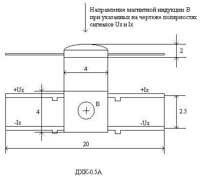
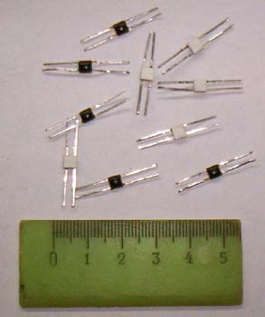
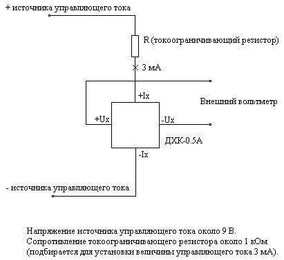

Датчик Холла ДХК-0.5А для измерения величины магнитной индукции
1. Назначение
Датчик Холла ДХК-0.5А предназначен для преобразования магнитной индукции в выходное напряжение. Принципом работы служит эффект Холла. Датчик выполнен на основе планарной топологической структуры, сформированной на поверхности кремниевого кристалла.
2. Основные технические характеристики:
3. Конструкция
Эскиз датчика представлен на рис. 3.1, а внешний вид - на рис. 3.2.

Рис. 3.1. Эскиз датчика Холла ДХК-0.5А.

Рис. 3.2. Внешний вид датчиков Холла ДХК-0.5А.
-Iх и +Iх - выводы для подключения источника управляющего тока
(токовые выводы)
-Uх и +Uх - выводы выходного сигнала (холловские выводы)
сопротивление между токовыми выводами меньше, чем между холловскими
Выходное напряжение в мВ:
+Uх - (-Uх) = K ∙ (Iх : 3)
∙ B,
где Iх - значение управляющего тока в мА
K - чувствительность в мВ/Тл (около 280 мВ/Тл) при токе управления 3 мА
B - величина магнитной индукции в Тл
Датчик ДХК-0.5А является знакочувствительным как по отношению к направлению магнитной индукции, так и по отношению к полярности управляющего тока.
4. Простая схема подключения датчика ДХК-0.5А
Вариант схемы подключения датчика ДХК-0.5А к источнику питания и внешнему измерительному прибору показан на рис. 4.1. Возможны и другие схемы подключения датчика, в том числе и с переменным управляющим током.

Рис. 4.1. Схема подключения датчика Холла ДХК-0.5А к внешним устройствам.
Датчик Холла ДХК-0.5А может быть использован при разработке и конструировании различных первичных преобразователей и приборов для магнитных измерений [2, 3].
Адрес изготовителя: 633190, Новосибирская обл., г. Бердск, ПО "Вега", МП "Электронная техника", телетайп: 133634 ПОИСК, тел.: (38341) 3-23-15.
Ссылки:
28.11.2003
12.01.2006
02.03.2007
02.11.2026
Альтернативные источники
энергии
Компьютеры и
Интернет
Магнитные поля
Механотронные системы
Перспективные
разработки
Электроника и технология